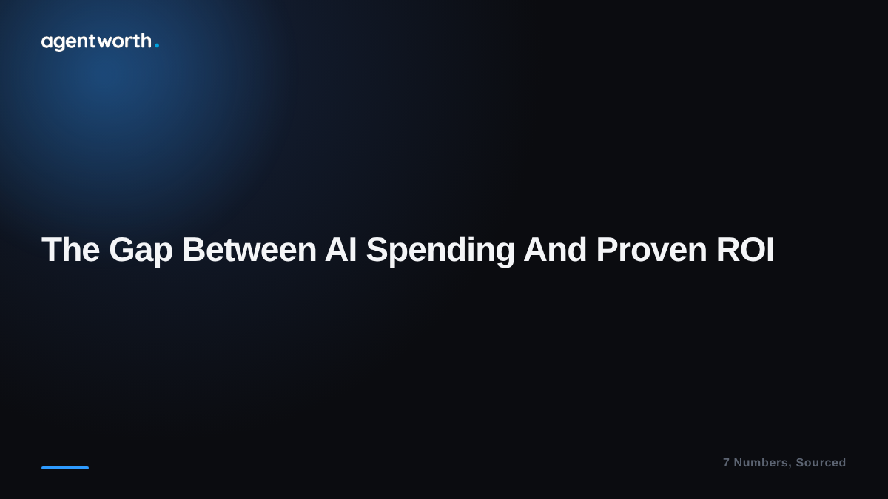

The gap between AI agent spending and proven ROI

Enterprises are pouring money into AI agents faster than at any point so far, and most of them still cannot tell you whether it is working. We pulled together seven numbers from public research that make this gap hard to miss, and put them in a free report. Here is the short version.
The numbers that stood out to us
- 95 percent of enterprise generative AI pilots fail to deliver a measurable financial return, according to MIT's GenAI Divide study.
- 82 percent of firms say they cannot prove their AI actually works, even while they keep scaling it across the business.
- Only about 25 percent of AI customer service use cases are producing measurable ROI, meaning roughly three out of four are not.
- 14 percent of CFOs say they completely trust AI to deliver accurate financial data on its own, without a human checking it.
Why this keeps happening
None of this is because the agents do not work. It is because almost nobody is set up to measure what they do. Most teams know their agent is busy, they can see the ticket count, but there is no step that turns that activity into a dollar figure anyone would sign off on. Spreadsheets get built after the fact, usually from guesses, and finance has learned not to fully trust them.
That is the exact gap agentworth is built for. We connect to the agent platform you already run, track every real resolution as it happens, and hand you one verified number with a receipt behind it, the kind of number a skeptical CFO could actually believe.
Read the full report, all seven numbers with sources, here: agentworth.cloud/ai-agent-roi-report. Want a rough version of your own number first? Try the free ROI calculator.